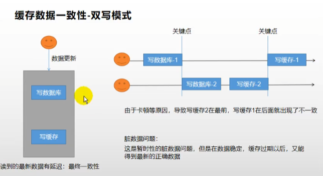
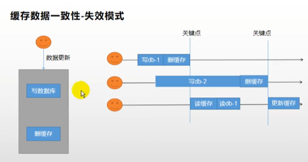
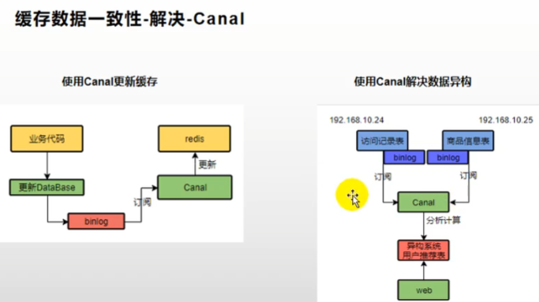
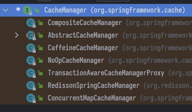
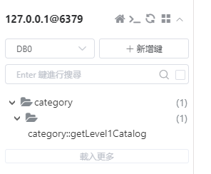

Redisson
-
Java操作Redis的框架，主要用他的分布式鎖的功能
-
加鎖的方法與邏輯幾乎都跟
java.util.concurrent包下的一樣- JUC包:
ReentrantLock那些，如果沒印象了看下面個種鎖的範例就會回想起來
- JUC包:
前置設定
https://github.com/redisson/redisson/wiki/2.-%E9%85%8D%E7%BD%AE%E6%96%B9%E6%B3%95
- 引包
<dependency>
<groupId>org.redisson</groupId>
<artifactId>redisson</artifactId>
<version>3.16.8</version>
</dependency>
- 造config類
- 注意
import org.redisson.config.Config
- 注意
@Configuration
public class RedissonConfig {
/**
* 所有對Redisson的使用都是通過RedissonClient
*
* @return
* @throws IOException
*/
@Bean(destroyMethod = "shutdown")
public RedissonClient redisson() throws IOException {
// 創建配置
Config config = new Config();
config.useSingleServer().setAddress("redis://localhost:6379");
// 根據Config創建出RedissonClient實例
// Redis url should start with redis:// or rediss://
RedissonClient redissonClient = Redisson.create(config);
return redissonClient;
}
}
- 注入RedissonClient，開始造鎖
@Autowired
RedissonClient redisson;
Lock 基本鎖
- 只要鎖的名字(例如:
"myLock")一樣，就是同一把鎖 - 預設為阻塞式等待，過期時間沒指定是30s
- 自動續期，如果業務超長，運行期間自動鎖上新的30s
- 如果手動指定了過期時間就不會自動續期，除非再使用看門狗
- 但何必搞那麼多，讓他預設30秒自動續就挺好
RLock lock = redisson.getLock("myLock")
// 設定10秒
lock.lock(10, TimeUnit.SECONDS);
ReadWriteLock 讀寫鎖
-
用來保證一定能讀到最新資料
-
一個讀寫鎖下包含一個讀鎖與一個寫鎖(好像廢話)
-
讀讀: 無限制
-
寫寫: 阻塞，排隊
-
寫讀: 修改期間(有人拿走了寫鎖)，讀也被鎖住，保證不會有人讀到髒資料
-
讀寫: 有人拿走了讀鎖，寫也被鎖住
-
-
總之讀無所謂，寫是互斥鎖，只要涉及寫就阻塞
@GetMapping(value = "/write")
@ResponseBody
public String writeValue() {
String s = "";
RReadWriteLock readWriteLock = redisson.getReadWriteLock("rw-lock");
RLock rLock = readWriteLock.writeLock();
try {
// 改資料加寫鎖，讀數據加讀鎖
rLock.lock();
s = UUID.randomUUID().toString();
ValueOperations<String, String> ops = stringRedisTemplate.opsForValue();
ops.set("writeValue",s);
TimeUnit.SECONDS.sleep(10);
} catch (InterruptedException e) {
e.printStackTrace();
} finally {
rLock.unlock();
}
return s;
}
@GetMapping(value = "/read")
@ResponseBody
public String readValue() {
String s = "";
RReadWriteLock readWriteLock = redisson.getReadWriteLock("rw-lock");
// 加讀鎖
RLock rLock = readWriteLock.readLock();
try {
rLock.lock();
ValueOperations<String, String> ops = stringRedisTemplate.opsForValue();
s = ops.get("writeValue");
try { TimeUnit.SECONDS.sleep(10); } catch (InterruptedException e) { e.printStackTrace(); }
} catch (Exception e) {
e.printStackTrace();
} finally {
rLock.unlock();
}
return s;
}
Semaphore 信號量
-
同時只能有幾人來操作的鎖，類似管道，用來限流
-
令牌桶算法，用
getSemaphore()方法獲取指定令牌實例- 要先在redis指定令牌名稱與有幾個，例如:
("park",3)
- 要先在redis指定令牌名稱與有幾個，例如:
-
用
acquire()獲取一個信號，這是阻塞的- 也可以用
tryAcquire()，反正帶try開頭就是非阻塞的
- 也可以用
-
用
release()釋放信號
/**
* 車庫3車位，讓人停車
* 信號量也可以做分散式限流
*/
@GetMapping(value = "/park")
@ResponseBody
public String park() throws InterruptedException {
RSemaphore park = redisson.getSemaphore("park");
park.acquire(); // 獲取一個信號、獲取一個值,占一個車位
boolean flag = park.tryAcquire();
if (flag) {
// 執行業務
} else {
return "error";
}
return "ok=>" + flag;
}
@GetMapping(value = "/go")
@ResponseBody
public String go() {
RSemaphore park = redisson.getSemaphore("park");
park.release(); // 釋放一個車位
return "ok";
}
CountDownLatch 閉鎖
- 限制幹了幾次之後就不幹了
- 先用
getCountDownLatch()獲取看門的實例 - 用
trySetCount()方法設定倒數的次數，await()開始倒數 - 執行業務邏輯後，用
countDown()方法使計數-1 - 計數到0，就鎖死
/**
* 放假、鎖門
* 5個人次走完，才可以鎖大門
* 分散式閉鎖
*/
@GetMapping(value = "/lockDoor")
@ResponseBody
public String lockDoor() throws InterruptedException {
RCountDownLatch door = redisson.getCountDownLatch("door");
door.trySetCount(5);
door.await(); // 等待閉鎖完成
return "放假了...";
}
@GetMapping(value = "/gogogo/{id}")
@ResponseBody
public String gogogo(@PathVariable("id") Long id) {
RCountDownLatch door = redisson.getCountDownLatch("door");
door.countDown(); // 計數-1
return id + "的人都走了...";
}
}
套用至項目
- 回到之前的CategoryServiceImpl.java，透過redisson可以簡化非常多
- 注意鎖的命名表示精細度，比如具體想鎖1號商品的鎖就該是"item-01-lock"，而非"item-lock"
- “item-lock"就該是用於所有item的集合的鎖
// Redisson分布式鎖
public Map<String, List<Catalogs2Vo>> getCatalogJsonWithRedisson() {
// 搶鎖
RLock lock = redisson.getLock("CatalogJson-lock");
// 搶到了，開始執行業務
lock.lock();
Map<String, List<Catalogs2Vo>> result;
try {
result = getCatalogJsonFromDb();
} finally {
lock.unlock();
}
return result;
}
緩存一致性問題
- 當我們想讓緩存與DB中的資料一樣，可以採用:
- 雙寫: 更新DB的操作同時也更新緩存
- 失效: 更新DB的操作同時把緩存清空，等下去別人請求的時候更新緩存
- 然而高併發之下就可能有問題，比如下圖範例:


解決辦法
- 併發本身不多就不考慮這麼多，機率太低，只要都給緩存設定過期時間，最終總會更新的
- 放到緩存的東西，本來就是讀多寫少才適合，要求即時、高一致性就乾脆去讀DB。頂多用個讀寫鎖，過度設計增加系統複雜性不可取
- 高級可以用Cannl輔助，Canal類似一個MySQL的從庫，他會追蹤主庫，並偽裝自己成一個DB，所以可以透過它來更新緩存
- 熟悉的"加一層"操作

- 顯然，自己給方法設定緩存、設定過期…這些幹的事情都挺重複的，於是乎Spring又又又封裝好了，Spring Cache因應而生
Spring Cache
Cache發音同現金那個Cash
- 用註解就能完成緩存操作，之前在尚醫通項目有稍微學過
- 核心: Spring已經把幾種常用的緩存類跟他們的AutoConfiguration封裝好了，只要在想使用緩存的方法上註解就能自動調用

- CacheManager接口，顧名思義就是用來管理Cache的
- 例如: ConcurrentMapCacheManager就是管理ConcurrentMapCache
- ConcurrentMapCache本身也是接口，封裝了操作底層ConcurrentMap做成的Cache的各種方法
- 同理RedissonSpringCache底層就是存到Redis的Cache
使用
- 首先引包
<dependency>
<groupId>org.springframework.boot</groupId>
<artifactId>spring-boot-starter-cache</artifactId>
<version>2.6.3</version>
</dependency>
- application.properties 指定要使用的cache類型
spring.cache.type=redis
# 存活時間，毫秒為單位，預設是-1即永久
spring.cache.redis.time-to-live=60000
# 如果指定了前綴就用我們指定的前綴，也可以不要前綴
#spring.cache.redis.key-prefix=CACHE_
#spring.cache.redis.use-key-prefix=false
# 是否緩存空值，用來防止緩存穿透
spring.cache.redis.cache-null-values=true
- 造Config類(沒有就會用預設的)
- 通常會在類修改緩存的value編碼方式(預設是二進位但一般都改成JSON)與日期格式的支援等等
- Config類 > application.properties，如果在properties設定了全域存活時間，在Config類就需要判斷優先級
- 就是下面那堆
if XXX !=null
- 就是下面那堆
@Configuration
@EnableCaching
public class CustomCacheConfig {
@Bean
public RedisCacheConfiguration redisCacheConfiguration(CacheProperties cacheProperties) {
RedisCacheConfiguration config = RedisCacheConfiguration.defaultCacheConfig();
// config = config.entryTtl();
config =
config.serializeKeysWith(RedisSerializationContext.SerializationPair.fromSerializer(new StringRedisSerializer()));
config =
config.serializeValuesWith(RedisSerializationContext.SerializationPair.fromSerializer(new GenericJackson2JsonRedisSerializer()));
CacheProperties.Redis redisProperties = cacheProperties.getRedis();
// 讓application.properties文件中的配置生效
if (redisProperties.getTimeToLive() != null) {
config = config.entryTtl(redisProperties.getTimeToLive());
}
if (redisProperties.getKeyPrefix() != null) {
config = config.prefixKeysWith(redisProperties.getKeyPrefix());
}
if (!redisProperties.isCacheNullValues()) {
config = config.disableCachingNullValues();
}
if (!redisProperties.isUseKeyPrefix()) {
config = config.disableKeyPrefix();
}
return config;
}
註解
@Cacheable
-
將方法的結果緩存起來，如果請求時已經有快取，就略過方法直接調用快取給結果，有以下參數:
-
value: 緩存的別名(不是存在redis的名而是在java這邊標示的)，通常把別名當成"分類"來用 -
cacheNames: 同上，二選一即可 -
sync: 開啟本地鎖，預設為false -
key: 可選，預設生成的是緩存的別名::SimpleKey[]- 最好設定成方法名
key = "#root.method.name"前綴::是在redis中會歸類成資料夾方便整理
- 最好設定成方法名
-

-
緩存的value值，為了好看好通用，一般會轉成JSON來存
-
例如:
@Cacheable(cacheNames = "category", key = "#root.method.name")
@Override
public List<CategoryEntity> getLevel1Catalog() {
return this.list(new QueryWrapper<CategoryEntity>().eq("parent_cid", 0));
}
@CacheEvict
-
清空指定快取，通常用於更新或刪除例如前面提過的失效模式，有以下參數:
-
allEntries: 清空該別名的所有快取，預設為false -
beforeInvocation: 在方法執行前就清空，預設為false
-
-
也可以指定刪除某key例如:
- 注意
key = "'getLevel1Catalog'"，字符串還要用單引號包住
- 注意
/**
* 級聯更新所有關聯的資料，更新了表，所以刪除快取
* @param category
*/
@CacheEvict(cacheNames = "category", key = "'getLevel1Catalog'")
@Transactional
@Override
public void updateCascade(CategoryEntity category) {
this.updateById(category);
categoryBrandRelationService.updateCategory(category.getCatId(), category.getName());
}
@CachePut
-
無論如何都會執行方法並更新到快取中，可以用於雙寫模式
-
區別在於
@Cacheable是如果緩存中有資料，方法就不會被執行
@Caching
- 若一行寫不下，可以這個聚合多行@Cachxxx註解
小結
-
Spring Cache很方便，但對於之前提過的問題
-
緩存穿透: 有人狂查null。可以設定開啟存null，解決
-
緩存雪崩: 大量key同時過期。只能靠過期時間，不太行
-
緩存擊穿: 一個熱點key被大併發訪問。本地鎖也算能應付
-
-
常規資料: 讀多寫少、一致性要求不高、併發量不大的離譜，Spring Cache完全可以勝任
-
特殊情況那就特殊設計
上次修改於 2022-01-29